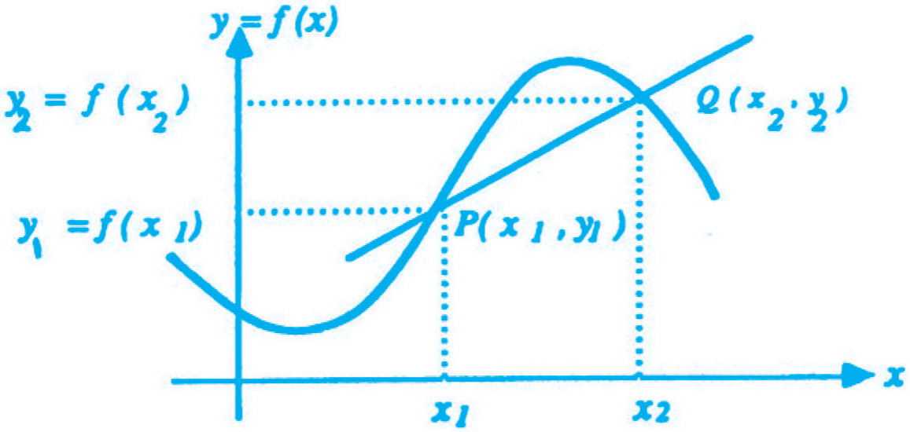
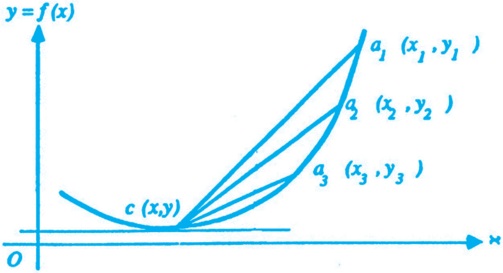
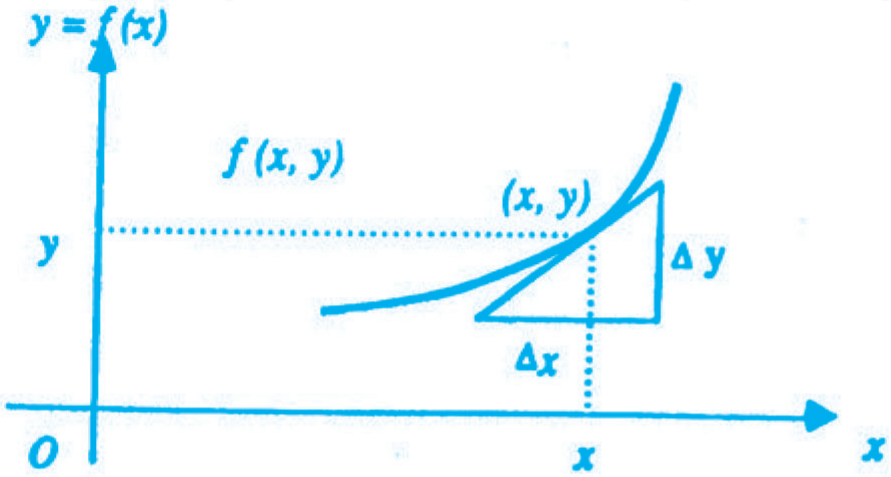
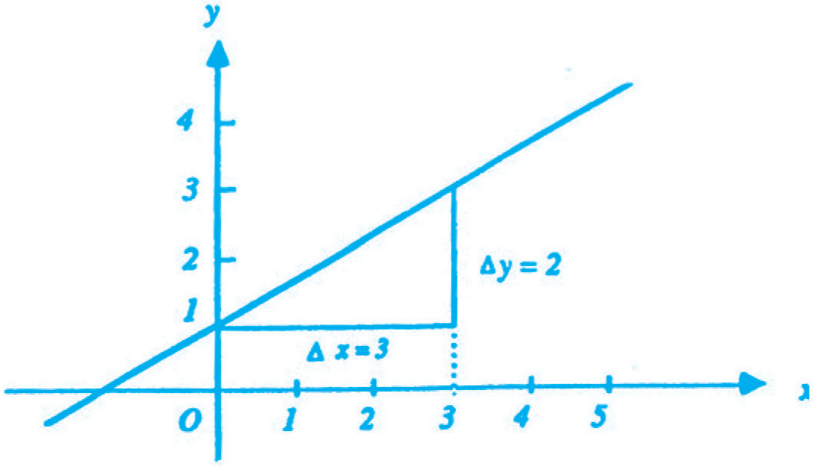
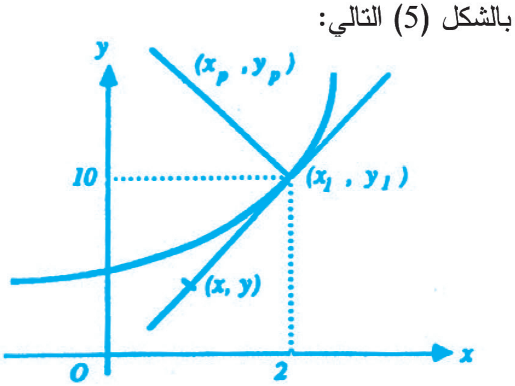
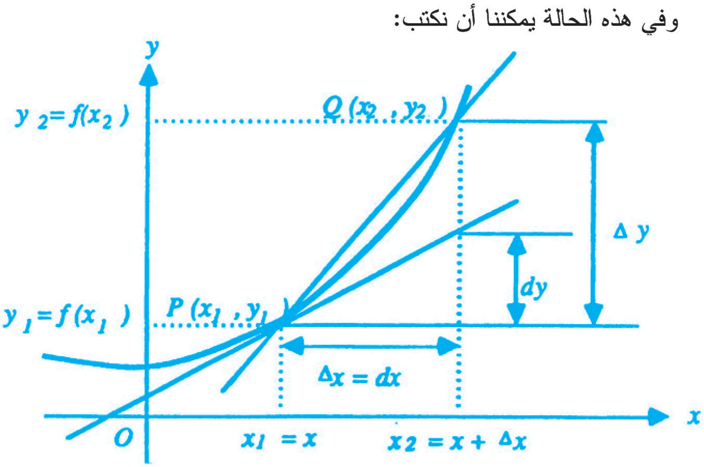
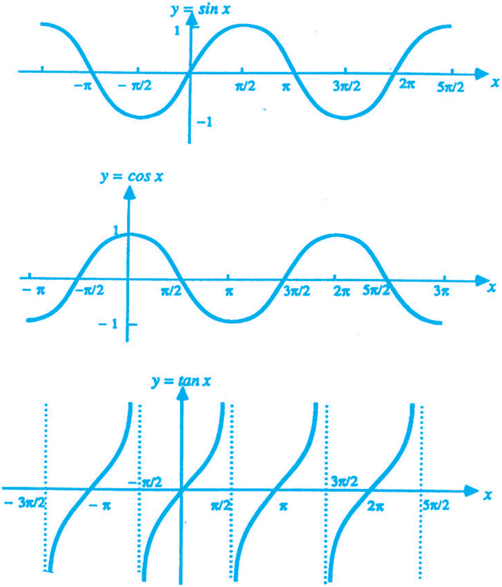
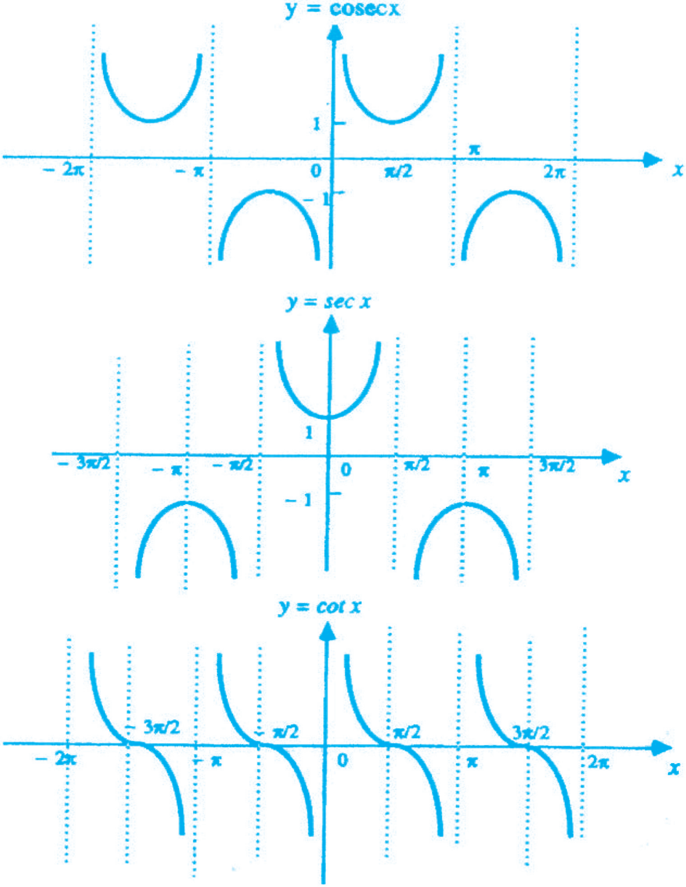

الاشتقاق
1. المقدمة
1.1 تمهيد
عزيزي الدارس، مرحباً بك في الوحدة الثانية من هذا المقرر.
تبحث هذه الوحدة موضوعاً أساسياً في الرياضيات المعاصرة وهو موضوع "الاشتقاق".
حيث يشكل هذا الموضوع مع موضوع "التكامل" المدخل الرئيس إلى كثير من الموضوعات الرياضية.
وتأتي هذه الوحدة بعد وحدة النهايات والاتصال، وذلك لأن تعريف المشتقة يستند إلى مفهوم النهايات. وهذه الوحدة تعتبر أساساً لفهم الوحدة الثالثة "تطبيقات الاشتقاق". لذا أرجو منك دراستها بكل جد واهتمام.
تحتوي الوحدة كذلك على أمثلة وأسئلة وتدريبات. إضافة إلى الرسوم التوضيحية، والجداول التي تلخص بعض القوانين والعلاقات.
أرجو أن تفيد من هذه الوحدة وأن تسهم في نقدها وتقييمها.
2.1 أهداف الوحدة
عزيزي الدارس، بعد فراغك من دراسة هذه الوحدة ينبغي أن تصبح قادراً على أن:
- تجد مشتقة اقتران معطى.
- تطبق قواعد الاشتقاق في حساب المشتقات.
- تستخدم قاعدة السلسلة.
- تحسب مشتقات اقترانات ضمنية.
- تجد معادلة المماس ومعادلة العمودي لمنحنى معطى عند نقطة عليه.
- تجد مشتقات اقترانات تتضمن اقترانات مثلثية.
3.1 أقسام الوحدة
تتبع الاقسام الأربعة المكونة لهذه الوحدة إلى حد بعيد الأهداف المذكورة في البند السابق.
فالقسم الأول "مدخل إلى الإشتقاق" يعالج مفهوم المشتقة ومعناها الهندسي من خلال مواقف عملية حياتية. وهذا القسم يحقق الهدف الأول من أهداف الوحدة.
والقسم الثاني يقدم لك قواعد ايجاد المشتقات، إضافة إلى بند خاص نفرده لقاعدة السلسلة، وذلك لأهمية هذه القاعدة، كما نتطرق في نهاية القسم إلى مشتقة الاقترانات الجبرية. ويرتبط هذا القسم بالهدفين الثاني والثالث.
وفي القسم الثالث "موضوعات في الإشتقاق" يتناول أربعة موضوعات هي: الاشتقاق الضمني، والمماسات والأعمدة، والمشتقات العليا، والتفاضلات مع أمثلة وتدريبات على كل موضوع. ويحقق هذا القسم الهدفين الرابع والخامس.
أما القسم الأخير فيبحث في "الاقترانات المثلثية" ومشتقاتها، حيث يبدأ بتعريفها ورسمها، وهذا يحقق الهدف الأخير من أهداف الوحدة.
4.1 القراءات المساعدة
إن هذه الوحدة بما تتضمنه من أقسام وأمثلة وتدريبات وأشكال توضيحية، تعتبر مكتفية بذاتها. ويمكنك تحقيق أهدافها دون الرجوع إلى مراجع أخرى. وعلى الرغم من ذلك ولمزيد من الاطلاع أنصح لك بالرجوع إلى المرجع التالي:
- عثمان، أحمد؛ حسنين، خالد؛ عرفات، عبد الملك؛ الطرزي، نصري، الرياضيات (1) (6101)، عمان: جامعة القدس المفتوحة، 1990، الوحدة الأولى.
5.1 ما تحتاج إليه لدراسة الوحدة
لعل الجو المريح، والمكان والوقت المناسبين للدراسة، من أهم عوامل نجاح الدارس في فهم المادة العلمية الواردة في هذه الوحدة واستيعابها.
ولكن فضلاً عن ذلك أنت بحاجة كذلك إلى مراجعة ما مر معك من منهاج المرحلة الثانوية في مادة الرياضيات لكي تستطيع ربط دراستك السابقة بما ستدرسه لاحقاً. مع تمنياتنا لك بالتوفيق.
2. مدخل إلى الاشتقاق
1.2 متوسط التغير
إذا نظرنا إلى الشكل (1)، وعدنا بالذاكرة للوراء قليلاً - إلى أيام الدراسة الثانوية - فإننا سنتذكر بالتأكيد أن متوسط التغير يساوي التغير في مقسوماً على التغير في ويمكننا أن نكتب ذلك على الشكل التالي:
وإذا كان لدينا الفترة المغلقة فإن متوسط التغير خلال هذه الفترة يساوي:
ومن الواضح في الشكل أن متوسط التغير في الاقتران يمثل ميل القطعة المستقيمة .

الشكل (1): توضيح مفهوم متوسط التغير للإقتران
2.2 المشتقة
هناك علاقة بين متوسط التغير، ومفهوم المشتقة. وكي نبين هذه العلاقة لنفرض أن لدينا الاقتران معرف على الفترة المغلقة حيث . فيكون متوسط التغير هنا يساوي:
فإذا إفترضنا أن وهذا يعني:
ويمكننا هنا أن نكتب متوسط التغير السابق على الشكل التالي:
وبصورة عامة يمكن أن نكتب:
حيث : تمثل أي نقطة في الفترة.
انظر إلى المعادلة السابقة ولاحظ ما يلي: عندما تقترب قرباً لا نهائياً من الصفر فإن طرفي الفترة يقتربان قرباً لا نهائياً من بعضهما بشكل يصعب معه التمييز بينهما، وبالتالي فإن متوسط التغير للإقتران يقترب من نهاية معينة، نسمي هذه النهاية: معدل تغير الاقتران عند القيمة .
قبل أن تتابع دراستك توقف لحظة!
أعد قراءة الفقرة السابقة.. ألا تذكرك بشيء؟
ألا تلاحظ أن تلك الفقرة توضح لك ببساطة مفهوم المشتقة الذي مر معك خلال مراحل دراستك السابقة. إن كنت لا تذكر هذا المفهوم جيداً دعنا نتذكره سوياً من خلال هذا التعريف.
الحل:
باستخدام تعريف المشتقة:
ب- بما أن المشتقة عبارة عن معادلة من الدرجة الأولى وهي اقتران كثير الحدود إذاً:
مدى هذه المشتقة = مجموعة الاعداد الحقيقية.
ج- نعوض قيم في معادلة المشتقة تعويضاً مباشراً:
واستكمالاً لتعريف المشتقة نضع الجدول (1) الذي يحتوي المفاهيم المهمة التي ينبغي عليك أن تعيها جيداً، لذا ادرس كل مفهوم منها بعناية، وتأكد من فهمك التام له قبل انتقالك إلى المفهوم الذي يليه.
جدول (1): المفاهيم المهمة في الاشتقاق
1. يكون الاقتران قابلاً للاشتقاق عند اذا كانت النهاية في تعريف المشتقة موجودة. ويكون غير قابل للاشتقاق في حالة عدم وجودها.
2. في الفترة المغلقة يكون الاقتران قابلاً للاشتقاق إذا حقق الشرطين التاليين:
أ) إذا كان قابلاً للاشتقاق في الفترة المفتوحة .
ب) إذا كانت النهايتان التاليتان موجودتين:
وتسمى النهاية الاولى: المشتقة من يمين النقطة "".
وتسمى النهاية الثانية: المشتقة من يسار النقطة "".
3. تكون مشتقة الاقتران عند النقطة "" موجودة، إذا كانت:
المشتقة من يمين النقطة "" = المشتقة من يسار النقطة "".
4. اذا كان الاقتران معرفاً على فترة مفتوحة تحتوي "" يغدو بامكاننا كتابة المشتقة عند النقطة "" على النحو التالي:
5. الاقتران القابل للاشتقاق عند نقطة ما يكون متصلاً عند تلك النقطة.
6. نستخدم للدلالة على المشتقة الاولى للاقتران رموزاً مختلفة هي:
ويسمى الرمز المؤثر أو الفاعل التفاضلي.
الحل:
نطبق القاعدة (4) في الجدول (1) فنجد:
3.2 مفهوم المشتقة والمعنى الهندسي لها
قبل أن تواصل دراستك في مواضيع الاشتقاق الكثيرة، يحسن بنا أن نتوقف عند التساؤلات التالية: ما معنى المشتقة؟ وما هو مفهوم الاشتقاق؟ وما صلته بالنواحي العملية والحياتية المختلفة؟
لعلك تبادر بالاجابة فتقول: إن المشتقة هي نهاية متوسط التغير لاقتران ما عندما تقارب قيمة التغير صفراً. وهذا لا شك صحيح، لكنه ليس كافياً لإدراك مفهوم المشتقة.
إن مفهوم المشتقة أحد أكثر المفاهيم الرياضية إتصالاً بالنواحي العملية. فلو أردت مثلاً أن تحسب سرعة سيارة أو طائرة أو صاروخ عند لحظة معينة، فأنت في الحقيقة تحسب مشتقة اقتران المسافة مع الزمن. وإذا رغبت في أن تحسب مدى تسارع قذيفة مدفع أو تباطئها فإنك عندئذ تحسب مشتقة اقتران السرعة مع الزمن. وأرجو أن لا يتبادر إلى ذهنك أن مفهوم مشتقة الاقتران مقصوراً (حسب الامثلة السابقة ) على حركة الاجسام بل يكاد يدخل في كل العلوم.
خذ علم الكهرباء مثلاً: لا شك أنك تسمع بمصطلح شدة التيار الكهربائي. ولو بحثت عن معناه وعلاقاته بالقيم الأخرى، فستجد إن شدة التيار الكهربائي تساوي: مشتقة اقتران تدفق الشحنة الكهربائية مع الزمن في الوسط الذي يمر فيه التيار... وهكذا.
وفيما يلي نوضح لك المعنى الهندسي للمشتقة.
في الشكل (2) تلاحظ أن النقطة الواقعة على منحنى الاقتران موصولة بخطوط مستقيمة مع النقاط . وبإمكاننا أن نكتب متوسط التغير للاقتران في الفترات على الترتيب التالي:
ومتوسط التغير في الحالات الثلاث ؛ يمثل ميل القطع المستقيمة الثلاث التالية على الترتيب أيضاً :
وما نود أن نصل إليه هو جواب السؤال التالي: من خلال ملاحظتك لاقتراب النقاط على الترتيب من النقطة "" ماذا تتوقع لو اقتربت هذه النقاط قرباً لا نهائياً من النقطة "" ؟ بمعنى: أن الفترة أو القطعة المستقيمة "" تصبح قريبة من الصفر.

الشكل (2): تغيير فترة التغير وعلاقته بالمشتقة
بمعنى:
وحسب تعريف المشتقة يمكننا أن نكتب معادلات متوسط التغير السابق كما يلي:
وبطريقة أخرى:
إذا امعنّا النظر بالمعادلات السابقة، وقارناها بالشكل السابق، فإننا نلاحظ في حالة المشتقة أن النقاط مع النقطة "" تصبح تقريباً نقطة واحدة. وبدلاً من أخذ كل من ميل القطع المستقيمة:
فإن الذي يحصل هنا هو أخذ ميل المماس عند النقطة ""، وهذا هو المعنى الهندسي للمشتقة. ويمكننا أن نكتب:
المعنى الهندسي لمشتقة الاقتران عند النقطة "" هو:
ميل المماس لمنحنى الاقتران عند النقطة "".
وبشكل عام يمكننا رسم ميل المماس عند النقطة في الشكل (3) التالي:

الشكل (3): ميل المماس لمنحنى الاقتران عند النقطة
والآن: هل أدركت مفهوم المشتقة؟ والمعنى الهندسي للمشتقة؟
ألا توافقني الرأي في أن الرياضيات أداة فاعلة لحل كثير من المسائل العملية وأنها ليست قوالب جامدة ومعادلات رياضية فقط؟
أرجو منك أن تقبل على دراسة الاقسام الاخرى بمزيد من النشاط.
3. قواعد إيجاد المشتقات
1.3 القواعد الاساسية
لاحظت في الاقسام السابقة أننا كنا نستخدم تعريف المشتقة من أجل ايجاد المشتقات للاقترانات المختلفة. والسؤال الآن: ألا توجد قواعد محددة تسهل علينا ايجاد المشتقات دون الاضطرار إلى استخدام تعريف المشتقة؟
الجواب: بلى، هناك قواعد كثيرة تضبط هذه العملية، وتجعل من اليسير عليك ايجاد المشتقة لأي اقتران يواجهك. وفيما يلي استعراض هذه القواعد.
قاعدة (1)
اذا كان الاقتران يساوي عدداً ثابتاً
فإن مشتقته تساوي صفراً.
البرهان:
حيث : عدد ثابت
ومن تعريف المشتقة نجد:
لأن الاقتران يساوي عدد ثابت، وبالتالي:
وهو المطلوب.
الحل:
حسب القاعدة (1) فإن:
قاعدة (2) قاعدة القوى
إذا كان حيث : عدد صحيح موجب
البرهان:
أ) نبدأ برهان الجزء الثاني، وذلك من خلال تعريف المشتقة:
ب) الجزء الاول من قاعدة القوى: يتم برهانه من خلال قاعدة توزيع ذات الحدين التالية:
ومن خلال تعريف المشتقة نجد:
ونطبق هنا توزيع ذات الحدين بحيث: فنجد:
نطرح ونقسم على فنجد:
ونعوض في المعادلة السابقة فلا يبقى سوى:
وهو المطلوب.
الحل:
باستخدام القاعدة (2) حيث نجد:
قاعدة (3) الاقتران المضروب بثابت
إذا كان الاقتران قابلاً للاشتقاق فإن مشتقة:
تساوي:
حيث : عدد ثابت
ويعني ذلك: مشتقة حاصل ضرب اقتران في عدد ثابت تساوي حاصل ضرب مشتقة الاقتران في العدد الثابت نفسه.
البرهان:
وبالتالي فإن:
وهو المطلوب.
الحل:
تلاحظ أن الاقتران هنا هو نفسه الوارد في مثال (5) عدا عن ضربه بعدد ثابت (2)، لذا تكون المشتقة:
القاعدة (4) مشتقة مجموع أو حاصل طرح اقترانين
مشتقة مجموع اقترانين أو حاصل طرحهما تساوي:
مجموع أو حاصل طرح مشتقتيهما كل على حده.
فإذا كان لدينا الاقتران التالي:
حيث تعني: جمعاً أو طرحاً
وبنفس الطريقة إذا كان لدينا أكثر من اقترانين، مثلاً:
فإن:
البرهان:
فإن:
وبإعادة ترتيب الحدود نجد:
وبالطريقة نفسها يمكننا إثبات حالة طرح الاقترانين، أو حاله وجود أكثر من إقترانين.
الحل:
نشتق حدود الاقتران كل حد على حدة، وبعد ذلك نجمع:
قاعدة (5) مشتقة حاصل ضرب اقترانين
مشتقة حاصل ضرب اقترانين تساوي:
الاقتران الاول × مشتقة الثاني + الاقتران الثاني × مشتقة الأول
ومثال ذلك:
البرهان:
نجمع إلى البسط المقدار ونطرحه منه فنجد:
وبتوزيع النهاية نجد
وهو المطلوب.
الحل:
باستخدام القاعدة (5) نجد:
قاعدة (6) مشتقة حاصل قسمة اقترانين
إذا كان لدينا الاقتران معرفاً بالشكل التالي:
فإن:
ويمكن التعبير عن ذلك بالكلمات التالية:
مشتقة حاصل قسمة اقترانين =
(المقام × مشتقة البسط – البسط × مشتقة المقام) ÷ مربع المقام
البرهان:
وبالتالي:
نجمع ونطرح المقدار: الى البسط ومنه فنجد:
نوزع النهاية على كل من البسط والمقام فنجد:
الحل:
من القاعدة (6) نجد
نتيجة:
وبعبارة أخرى: مشتقة (1/الاقتران)= −
ويمكننا إثبات ذلك من خلال القاعدة (6) السابقة حيث:
حيث هي مشتقة العدد (1) وتساوي صفراً.
نتيجة أخرى:
إذا كان عدداً صحيحاً موجباً؛ فإن:
الحل:
يمكننا ايجاد المشتقة بطريقتين هما:
أ) استناداً الى النتيجة الاولى، على اعتبار أن:
فنجد:
ب) الطريقة الثانية استناداً الى النتيجة الثانية حيث:
وبالتالي:
لاحظ أننا حصلنا على الإجابة نفسها في الطريقتين.
2.3 قاعدة السلسلة، القاعدة (7)
تبرز أهمية هذه القاعدة عند معالجة الاقترانات المركبة. وأقصد بالاقترانات المركبة تلك الاقترانات التي يكون المتغير المستقل فيها معرفاً بدلالة متغير مستقل آخر.
وهنا تلاحظ أن المتغير "" معرف بدلالة ""، والمتغير "" معرف بدلالة المتغير ، ومن هنا نكتب الاقتران المركب "" كما يلي:
ولكن... كيف نستطيع ايجاد المشتقة ؟
هذا التساؤل تجيب عنه قاعدة السلسلة المعرفة فيما يلي:
نص قاعدة السلسلة
إذا كان لدينا الاقترانات التالية:
وكانت المشتقتان موجودتين، فإن:
الحل:
لايجاد المشتقة حسب قاعدة السلسلة نبدأ باشتقاق "" بالنسبة لـ "" ونضرب الناتج في مشتقة "" بالنسبة لـ "" كما يلي:
والآن نعوض قيمة في الناتج:
فائدة:
اذا كان لدينا الاقتران قابلاً للاشتقاق، ومرفوعاً للأس "" فيمكن كتابة مشتقته على النحو التالي:
ولاثبات ذلك نستخدم قاعدة السلسلة، على اعتبار أن:
وبالتالي:
الحل:
أ) باستخدام الفائدة السابقة، حيث نجد:
ب) نكتب الاقتران بالصيغة التالية:
لاحظ أننا نحصل على نفس الاجابة لو حللنا هذا الجزء، بتطبيق حاصل مشتقة
جرب ذلك وقارن.
3.3 مشتقة الاقترانات الجبرية على الصيغة
اذا كانت لدينا الصيغة حيث : عددان صحيحان، فكيف تجد مشتقتها؟
والجواب على ذلك ما يلي: نفرض أن ، ونطبق القاعدة (2) الواردة في القسم (1.3) السابق، فنحصل على:
وبصورة عامة فإن مشتقة مثل هذه الاقترانات تكون وفق القاعدة التالية:
قاعدة (8)
إذا كان لدينا
حيث عددان صحيحان، فإن:
الحل:
لاحظ أن هذا المثال قد يرد بالصورة التالية:
اما المشتقة فهي:
وبالتالي:
والجدول التالي يلخص القواعد السابقة.
الجدول (2)
| التسلسل | ||
|---|---|---|
| 1 | ||
| 2 | ||
| 3 | ||
| 4 | ||
| 5 | ||
| 6 | ||
| 7 | ||
| 8 | ||
| 9 | ||
| 10 | ||
| 11 | ||
| 12 |
4. موضوعات في الاشتقاق
لعلك تتساءل: ما الذي دفعنا لاختيار هذا العنوان "موضوعات في الاشتقاق" لهذا القسم؟ ولك الحق في ذلك، وإليك الجواب:
إن هذا القسم يتضمن موضوعات تعتمد على المفاهيم التي تم طرحها في الأقسام السابقة، ولكن هذه الموضوعات لا يجمعها رابط واحد متسلسل، فكل واحد منها يبحث في موضوع مختلف عن الآخر.والموضوعات التي سنتناولها هنا هي: الاشتقاق الضمني والمعادلات الوسيطية، والمماسات والأعمدة، والمشتقات العليا، والتفاضلات.
وقبل البدء بدراسة هذه الموضوعات كلاً على حدة دعنا نتساءل:
ماذا نعني برمز المشتقة ؟
قد يكون لديك أكثر من إجابة على هذا السؤال، فربما تقول: إن مشتقة الاقتران عند نقطة تعني ميل المماس لمنحنى الاقتران عند تلك النقطة. ومن المؤكد أن هذه الإجابة صحيحة، ولكن ما اريده هنا من هذا السؤال أن أوضح لك أن الرمز يعني مقدار التغير اللحظي في قيمة المتغير "" عندما تتغير "" لحظياً، وبالتالي وبالطريقة نفسها فإن الرمز يعني التغير اللحظي في قيمة "" بالنسبة للتغير اللحظي في قيمة "".
إذاً فالمشتقة تعني التغير اللحظي في قيمة المتغير في البسط بالنسبة للتغير اللحظي في قيمة المتغير في المقام معرفاً بدلالة متغير ثالث.
ومن أبرز التطبيقات على قانون السلسلة موضوع الاشتقاق الضمني الذي سنتناوله فيما يلي.
1.4 الاشتقاق الضمني والمعادلات الوسيطية
نبدأ أولاً بتفسير كلمة ضمني من خلال المعادلة التالية:
ويمكننا أن نكتب المعادلة (1) السابقة على الصورة التالية:
وبالتالي:
تسمى المعادلة (2) السابقة معادلة صريحة بين المتغيرين و وذلك لان الطرف الايسر من المعادلة يحتوي متغيراً واحداً هو ، والطرف الأيمن يحتوي متغيراً واحداً هو .
أما المعادلة الاولى رقم (1) فقد كان الطرف الأيسر يحتوي متغيرين هما و . لذا نسمي المعادلة (1) معادلة ضمنية بين و . ولكن في المعادلة (1) أمكننا الفصل بين المتغيرين في معادلة صريحة هي المعادلة (2).
والسؤال الآن: هل يمكننا دائماً تحويل المعادلة الضمنية الى معادلة صريحة، ولإجابة هذا السؤال أنظر المعادلة التالية:
تلاحظ من هذه المعادلة أن التعبير عن المتغير بدلالة المتغير "" من خلال معادلة صريحة أمر صعب جداً. والسؤال هنا:
كيف نجد المشتقة للمعادلات 1، 2، 3؟
لا شك أن المعادلتين (1 و 2) هما معادلة واحدة، ولكن تم إعادة ترتيبها بصورتها النهائية في المعادلة (2) ويمكننا اشتقاق المعادلة (2) بالشكل التالي:
أما المعادلة (3) فنشتق كل حد من حدودها بالنسبة للمتغير "" كما يلي:
وتلاحظ أنه يسهل علينا اشتقاق الحدين التاليين من المعادلة:
لكن ماذا عن الحدين: ؟
نفترض في المعادلة الضمنية أن المتغير "" عبارة عن اقتران مستقل بذاته، ونعامله على هذا الاساس، لذا نفرض:
لذا نستخدم هنا قاعدة السلسلة التي اشرنا اليها قبل بداية هذا القسم:
وفي الاشتقاق الضمني نكتب:
أما الحد الاخير فهو عبارة عن حاصل ضرب اقترانين هما:
الأول: ومشتقته 4.
والثاني: ومشتقته
وبتطبيق قاعدة مشتقة حاصل ضرب اقترانين نجد:
ثم نعوض هذه المشتقات في المعادلة السابقة فنجد:
نجمع حدود معاً فنجد:
لاحظ أن المشتقة هنا معرفة بدلالة كل من المتغيرين و .
الحل:
نأخذ المشتقة لكل حد على حدة:
نشتق كل حد على حدة:
وبالتعويض في المعادلة نجد:
المعادلات الوسيطية
عند حديثنا عن قاعدة السلسلة قلنا: أن المتغيرات في المقام يعرفان بدلالة متغير ثالث. وفي حالة المعادلات الوسيطية فإن المتغيرين في البسط والمقام يكونا معرفين بدلالة متغير ثالث والذي يسمى وسيطاً: (Parameter).
ومثال ذلك المعادلتان التاليتان:
ولايجاد المشتقة لدينا طريقتان:
الاولى: نعبر عن أحد المتغيرين بدلالة الآخر على النحو التالي:
وبالتعويض في المعادلة (1) نجد:
أما عند وجود معادلات يصعب فيها التعويض فعلينا أن نلجأ الى الطريقة العامة في الحل والواردة في التعريف التالي:
الحل:
نستخدم اشتقاق المعادلات الوسيطية على اعتبار أن الوسيط هنا "".
و
الحل:
لايجاد ميل المماس لا بد من ايجاد المشتقة ، ويمكننا ايجادها باستخدام الاشتقاق الضمني لمعادلة الدائرة كما يلي:
وبما أن و معلومتان، فإن ايجاد الميل () يكون بالتعويض المباشر في معادلة كما يلي:
الحل:
نفرض فيكون المطلوب ايجاد ، ويتم ذلك باستخدام مشتقة المعادلات الوسيطية على اعتبار أن الوسيط هنا "" فنجد:
2.4 المماسات والاعمدة
عند دراستنا للتعريف الهندسي للمشتقة قلنا أن المشتقة تساوي: ميل المماس لمنحنى الاقتران عند نقطة. وبالتالي يمكننا ايجاد ميل المماس لاي اقتران عند نقطة من خلال: اشتقاق الاقتران اشتقاقاً عادياً أو ضمنياً، ثم نعوض احداثيي النقطة في المشتقة.
ولإيجاد معادلة المماس عليك أن تتذكر معي بعض طرق ايجاد معادلة الخط المستقيم، وبعض خصائصه التي درستها في المرحلة الثانوية، وفيما يلي استعراض لهذه الخصائص:
قواعد وقوانين المستقيمات
(1) لايجاد معادلة الخط المستقيم بمعرفة النقطتين الواقعتين عليه:
ب) نأخذ أي نقطة عليه مثل فتكون معادلة الخط المستقيم:
(2) المعادلة العامة للخط المستقيم هي:
حيث: : ميل الخط المستقيم
: طول القطعة التي يقطعها المستقيم مع محور .
ومن الشكل (4) يمكن أن نكتب:

الشكل (4): توضح المعادلة العامة للخط المستقيم
(3) إذا كان لدينا مستقيمان متعامدان، ميل الأول منهما ، فإن ميل العمود عليه يساوي بمعنى أن حاصل ضرب ميليهما يساوي:
(4) اذا كان المستقيمان متوازيين فإن ميليهما متساويان.
(5) معادلة الخط المستقيم الذي يقطع محوري و عند النقطتين على الترتيب
الحل:
نعتبر تساوي ونعوض في المعادلة:
وعند استخدام النقطة الاخرى نجد:
الآن نأخذ المماس المرسوم لمنحنى الاقتران والموضح بالشكل (5) التالي:

الشكل (5)
نلاحظ من الشكل أن المماس مرسوم عند النقطة ، وأننا رسمنا خطاً عمودياً على المماس عند النقطة نفسها. ولايجاد معادلة الخط العمودي على المماس عند النقطة والتي تساوي نبدأ بايجاد ميل هذا العمودي. ويمكن ايجاد الميل باحدى الطريقتين التاليتين:
(1) اذا علمنا احداثيي النقطتين الواقعتين عليه، فيمكننا ايجاد المعادلة بالطريقة المشروحة سابقاً.
(2) في حالة عدم معرفتنا إحداثي النقطة . وهذا هو الاغلب، نتبع الخطوات التالية:
أ) نجد مشتقة الاقتران فتكون:
ب) نجد ميل المماس عند وذلك بالتعويض في معادلة المشتقة كما يلي:
ج) وبالتالي فإن ميل العمودي على المماس عند يكون:
د) وبما أن العمودي يمر بالنقطة ، وميله يساوي فإن معادلته هي:
الحل:
تعلم أن ، وبالتالي فإن النقطة تقع على منحنى الاقتران وذلك لأن ، وميل المماس عند يساوي قيمة المشتقة:
وبما أن المماس يمر بالنقطة وميله يساوي "3" فإن معادلته هي:
الحل:
المعادلة العامة للخط المستقيم هي:
ومن خلال المقارنة مع المعادلة المعطاة نجد:
أ) ميل هذا الخط () يساوي (5).
ب) يتقاطع هذا الخط مع محور "" عند
ومن معادلة الخط المعطاة نجد
ونعلم أن قيمة للنقطة الواقعة على محور "" تساوي صفراً وذلك لأن "" تأخذ قيماً موجبة على يمين محور وقيماً سالبة على يسار هذا المحور. أما على المحور نفسه فقيمة ، لذا فإن نقطة تقاطع الخط المستقيم مع محور هي: (0، ).
ج) كذلك فإن قيمة على محور تساوي الصفر دائماً (هل تستطيع أن تفسر لماذا؟ نترك لك الاجابة).
لذا نعوض في معادلة الخط المستقيم المعطاه قيمة لنجد قيمة التي يتقاطع عندها الخط مع محور .
نقطة تقاطع الخط مع محور هي: .
ملاحظة:
عند تعويض قيمة في المعادلة العامة للخط المستقيم نجد:
وعند تعويض قيمة في المعادلة العامة للخط المستقيم نجد:
وبتطبيق ذلك على معادلة الخط المعطاة في المثال (20) نجد:
و
وهما القيمتان اللتان حصلنا عليهما سابقاً.
الحل:
لايجاد معادلة هذا الخط نقوم بالخطوات التالية:
(1) نجد مشتقة الاقتران وتساوي:
(2) نجد ميل هذا الاقتران عند النقطة والذي يساوي:
(4) نعلم أن النقطة تقع على منحنى الاقتران وفي الوقت نفسه تقع على الخط العمودي القائم على مماس الاقتران لذا نجد قيمة فتكون:
إذاً فالنقطة تقع على العمودي.
(5) نجد معادلة العمودي بالتعويض في المعادلة:
وبضرب طرفي المعادلة في (5) وإعادة ترتيب حدودها نحصل على:
3.4 المشتقات العليا
تعرف المشتقة الثانية للاقتران على أنها:
مشتقة المشتقة الاولى
ونرمز للمشتقة الثانية بالصورة التالية:
الحل:
وباشتقاق هذه المشتقة مرة أخرى نحصل على المشتقة الثانية:
وتعرف المشتقة الثالثة بأنها ناتج اشتقاق المشتقة الثانية.
والمشتقة الرابعة تساوي ناتج اشتقاق المشتقة الثالثة، وهكذا.
الحل:
لاحظ هنا أن المشتقات السادسة والسابعة وما فوق = صفراً.
تسمى المشتقات: الثانية والثالثة ولغاية المشتقة التي رتبتها "" بالمشتقات العليا، حيث : عدد صحيح موجب ونكتب ذلك بالصيغ التالية:
الحل:
نشتق ضمنياً لايجاد المشتقة الأولى:
نشتق ضمنياً مرة أخرى:
نعوض قيمة في هذه المعادلة فنجد:
4.4 التفاضلات
لنفرض أن اقتران في ، وأنه قابل للاشتقاق على مجاله. ندرس في هذا البند المسألة التي تقابلنا في كثير من التطبيقات وهي: كيفية ايجاد التغير الذي يطرأ على المتغير عندما يحدث تغير طفيف في قيمة المتغير "".
فإذا تغيرت من الى ، نرمز لمقدار التغير بالرمز ونكتب:
كما نرمز للتغير المناظر في بالرمز فيكون:
ويكون متوسط التغير في قيمة بالنسبة الى يساوي .
تذكر أننا عرفنا المشتقة اعتماداً على متوسط التغير على أنها:
أي أن: المشتقة هي نهاية نسبة التغير في الى التغير في عندما تقترب من الصفر (إذا كانت النهاية موجودة).
وتلاحظ من الشكل (6) التالي أن النسبة هي ميل القاطع للمنحنى، كما تلاحظ أنه اذا كان الاقتران قابلاً للاشتقاق فإنه عندما تكون فإن:
وفي هذه الحالة يمكننا أن نكتب:

الشكل (6)
ونعطي المقدار اسماً خاصاً كما في التعريف التالي:
وتلاحظ من الشكل (6) أن أكبر من خلال الفترة ، ولكن في حالة كون صغيرة جداً يمكننا أن نقول إن:
تساوي تقريباً ونكتب:
واستخدام هذا التقريب مهم جداً في كثير من الحسابات الرياضية.
وتزداد دقته كلما كانت قيمة أصغر.
الحل:
والقيمة التقريبية لـ تساوي:
أما القيمة الحقيقية للتغير في فتساوي:
الفرق بين القيمة الحقيقة والقيمة التقريبية يساوي:
ومن الحسابات المهمة التي تتم باستخدام التفاضلات، ايجاد قيم تقريبية لبعض المقادير التي يصعب حسابها يدوياً مثل الرقم
ويتم ايجاد القيمة التقريبية لمثل هذه المقادير بالخطوات التالية:
(1) نكتب المقدار على صورة اقتران عام، وهو في هذه الحالة:
(2) نفرض القيمة الابتدائية لـ ومنها نخرج قيمة الابتدائية.
(3) نفترض أن الاختلاف بين قيمة وقيمة المقدار المعطى تساوي:
(4) نحسب قيمة التقريبية من المعادلة:
(5) نجمع قيمة مع القيمة الابتدائية ويكون الناتج مساوياً لقيمة المقدار المراد ايجاده.
لنأخذ المثال التوضيحي التالي:
الحل:
(1) نفرض أن المعادلة هي:
(2) نفترض القيمة الابتدائية لـ ، وبالتالي تكون قيمة الابتدائية:
(4) نحسب التغير في من خلال المعادلة:
(5) نجمع قيمة التغير في الى القيمة الابتدائية لنجد قيمة المقدار:
الحل:
أ) بتطبيق الخطوات المذكورة في مثال (26):
نفرض أن القيمة الابتدائية لـ لأنه يسهل اخراج جذرها الذي يساوي 0.5، وبالتالي تكون قيمة الابتدائية:
والآن نحسب
ب) نختار زاوية تكون قريبة من ويكون جيبها معروفاً مثل ، ولكن لابد هنا من استخدام الحسابات بالتقدير الدائري لا بالدرجات.
حيث أن بالدرجات تقابل بالتقدير الدائري، وبالتالي:
لاحظ أن الاشارة سالبة، وذلك لأن قيمة نقصت من الى وبالتالي كان التغير سالباً، والآن نحسب:
ملاحظة هامة: مشتقة تساوي . وسنتناول ذلك بالتفصيل خلال القسم الأخير من هذه الوحدة.
ونجري الحسابات على أساس أن فنجد
5. اشتقاق الاقترانات المثلثية
1.5 الاقترانات المثلثية
درست في المقرر 5160 "رياضيات عامة" الاقترانات المثلثية وخصائصها وبياناتها، ونذكرك فيما يلي ببياناتها وأهم القوانين والمتطابقات التي تربط فيما بينها.
الشكلان (7) و (8) يبينان الرسم البياني للاقترانات الستة. كما يشتمل الجدول (3) على أهم القوانين والمتطابقات التي تربط بين الاقترانات المثلثية.

الشكل (7): رسم الإقترانات

الشكل (8): رسم الإقترانات
الجدول (3): المتطابقات المثلثية
المتطابقات الأساسية
متطابقات الجمع
متطابقات ضعف الزاوية
متطابقات نصف الزاوية
متطابقات الضرب
متطابقات جمع الحدود
2.5 مشتقتا الاقترانين
قبل البدء باشتقاق هذين الاقترانين لا بد أن تطلع على النهايتين التاليتين، وذلك لاننا سنستخدمهما في الاشتقاق:
نبدأ باشتقاق الاقتران باستخدام تعريف المشتقة:
وباستخدام المتطابقة المثلثية رقم (4) في الجدول (3) نجد:
وبالتالي يصبح:
ويأخذ عاملاً مشتركاً نجد:
ومن النهايات المعرفة في بداية هذا القسم نجد:
3.5 مشتقات بقية الاقترانات المثلثية
ونلاحظ أنه حاصل قسمة اقترانين، لذا نطبق قاعدة حاصل قسمة اقترانين لايجاد
المشتقة:
وباستخدام المتطابقة المثلثية رقم (1) في الجدول (3) نجد:
وبالتالي:
أما بالنسبة للاقترانين فنجد مشتقتيهما كما يلي:
أما إذا كانت:
فإن:
بهذا نكون قد انتهينا من اشتقاق جميع الاقترانات المثلثية، ولكن بقي لدينا سؤال:
ماذا لو أردنا اشتقاق اقتران مثل: حيث ؟
في هذه الحالة نكتب على الصيغة:
وهذا اقتران مركب، لذا لا بد من تطبيق قاعدة السلسلة كما يلي:
وبصورة مماثلة يمكنك اثبات صحة المشتقات الواردة في الجدول (4) التالي:
الجدول (4)
| التسلسل | ||
|---|---|---|
| (1) | ||
| (2) | ||
| (3) | ||
| (4) | ||
| (5) | ||
| (6) |
الحل:
وكذلك:
لذا نكتب:
والمقدار الاخير عبارة عن حسب متسلسلة ماكلورين.
الحل:
لذا فإن:
نفرض:
وبالتالي:
6. الخلاصة
ما الذي ناقشناه في الوحدة الثانية؟ وهل تم تحقيق الاهداف التعليمية المتوخاة؟
أرجو منك مراجعة تلك الاهداف قبل أن تجيب على هذا السؤال.
ثم حاول أن تستكمل دراسة الأجزاء التي ما زالت غير واضحة لديك، وبعد فراغك تماماً من فهم أجزاء الوحدة كافة، أدعوك لدراسة الملخص التالي الذي يمثل الافكار والمفاهيم الرئيسة التي ذكرناها في الوحدة.
- متوسط التغير للاقتران في فترة مغلقة يساوي الفرق بين قيمتي الاقتران عند بداية الفترة ونهايتها، مقسوماً على الفرق بين بداية الفترة ونهايتها.
- تعرف مشتقة الاقتران بالقاعدة التالية:
- الاقتران القابل للاشتقاق عند نقطة هو الاقتران الذي تكون مشتقته من اليمين تساوي مشتقته من اليسار عند تلك النقطة.
- الاقتران القابل للاشتقاق عند نقطة يكون متصلاً عند تلك النقطة.
- مشتقة الاقتران عند نقطة تعني ميل المماس لمنحنى الاقتران عند تلك النقطة.
- قواعد ايجاد المشتقات ملخصة في الجدول (2).
- نطبق الاشتقاق الضمني في حال وجود معادلات ضمنية، وهو يعتمد على قانون السلسلة. ويتم اشتقاق كل حد في المعادلة على حدة، ومن ثم نجمع الحدود التي فيها لوحدها، وبقية الحدود تفصل لوحدها كذلك. ثم نجد اعتماداً على ذلك.
- نستخدم قاعدة السلسلة عندما يكون المتغير الذي نشتق بالنسبة اليه معرفاً بدلالة متغير ثالث، فإذا كان معرفاً بدلالة ، و بدلالة المتغير .
فهنا لا توجد علاقة تعريفية مباشرة بين و لذا فإن:
- اذا كان لدينا المتغيران و معرفين بدلالة وسيط مثل فإننا نستخدم قاعدة اشتقاق المعادلات الوسيطة لايجاد المشتقة كما يلي:
- نجد معادلة المماس لمنحنى الاقتران، ومعادلة العمودي على المماس من خلال معرفتنا بأن ميل المماس لمنحنى الاقتران عند نقطة يساوي مشتقة ذلك الاقتران عند تلك النقطة.
- وأن حاصل ضرب ميل المماس في ميل العمودي عليه يساوي ().
وبالتالي، وبمعرفة نقطة التماس والميل يمكن ايجاد معادلة كل من المماس والعمودي عليه.
- المشتقات العليا تعني: المشتقة الثانية والثالثة والرابعة..... الخ.
ونجد أياً من المشتقات العلياباشتقاق المشتقة الأدنى منها برتبة واحدة. أي أن المشتقة الحادية عشرة هي حاصل اشتقاق المشتقة العاشرة، والعاشرة حاصل اشتقاق التاسعة... وهكذا.
- نستخدم فكرة التفاضلات لايجاد القيم التقريبية لبعض المقادير من خلال المعادلة العامة التالية:
7. لمحة عن الوحدة الدراسية الثالثة
إن موضوع الوحدة الثالثة هو: "تطبيقات الاشتقاق"، وواضح لك من عنوانه أنه يبحث في تطبيقات عملية على موضوع الاشتقاق.
سنتناول في الوحدة الثالثة عدداً كبيراً من التطبيقات تبدأ من نظرية رول ونظرية القيمة المتوسطة وقاعدة لوبيتال. وتنتهي بالمعدلات المرتبطة. وخلال الوحدة نبحث كلاً من الموضوعات التالية: التزايد والتناقص، التقعر ونقطة الانعطاف، وكذلك القيم القصوى وخطوط التقارب، ورسم المنحنيات، ونتطرق إلى مواضيع أخرى كذلك.
ان الحشد الكبير من المصطلحات والاسماء الجديدة التي ذكرناها آنفاً قد لا تكون واضحة لديك تماماً، ولكن ما أرجوه بذكرها هو إثارة التشويق لديك ودفعك لمواصلة دراسة الوحدة الثالثة بمزيد من المتعة، خصوصاً وأن ما طرح من موضوعات معظمه عملي.
8. إجابات التدريبات
تدريب (1)
السرعة المتوسطة = متوسط التغير في اقتران المسافة وتساوي:
(متر / ثانية)
تدريب (2)
نأخذ المشتقة عند النقطة "0 " من اليمين ثم من اليسار ونقارن فنجد:
وبما أن المشتقة من اليمين المشتقة من اليسار إذاً: فالمشتقة غير موجودة.
تدريب (3)
يمكننا تحليل البسط والمقام لهذا الاقتران قبل بدء الاشتقاق:
تدريب (4)
(1) هذا الاقتران عبارة عن حاصل ضرب اقترانين:
الأول ومشتقه تساوي:
والثاني ومشتقه تساوي:
ونطبق القاعدة فنجد:
(2) مشتقة ما داخل القوس تساوي:
وبالتالي:
(3) نكتب المقدار بشكل آخر:
ونشتق فنجد:
تدريب (5)
نأخذ عامل مشترك فنجد:
(تأكد من النتيجة).
تدريب (6)
(1) نعلم أن المستقيمين المتوازيين يكون ميلاهما متساويين.
وبما أن ميل الموازي = 3
إذاً فميل المماس المرسوم = 3 أيضاً.
وأصبح معلوماً لدينا ميل المماس ونقطة عليه. لذا نجد معادلته كما يلي:
(2) ميل العمودي = .
ونجد المعادلة بعد معرفة الميل ونقطة كما يلي:
تدريب (7)
(2) باستخدام قانون المعادلات الوسيطية نجد:
تدريب (8)
وبالتالي يكون الفرق = 0.000115 وهو صغير جداً، وذلك لأن صغيرة جداً.
تدريب (9)
نستخدم المتطابقة رقم (6) في الجدول (3) فنجد:
ونعوض في النهاية فنجد:
تدريب (10)
تدريب (11)
9. إجابات بعض أسئلة التقويم الذاتي
أسئلة التقويم الذاتي (1)
(1) 7.01
(2)
(3)
(4) المشتقة عن يمين العدد (3) = 1
المشتقة عن يسار العدد (3) =
إذاً المشتقة غير موجودة أو الاقتران غير قابل للاشتقاق عند (3).
أسئلة التقويم الذاتي (2)
(1)
(2) أ- ب-
أسئلة التقويم الذاتي (3)
(1)
أسئلة التقويم الذاتي (5)
10. مسرد المصطلحات
- الاشتقاق الضمني (Implicit Differentiation): هو اشتقاق كل حد من حدود المعادلة الضمنية بين متغيرين بالنسبة لأحدهما.
- التفاضلات (The Differentials): تفاضله متغير مثل "" تساوي قيمة التغير اللحظي في "" ويرمز لها بالرمز . ورياضياً تساوي المشتقة عند تلك النقطة مضروبة في تفاضله ، .
- قاعدة السلسلة (The Chain Rule): قاعدة تستخدم لايجاد مشتقة الاقترانات المركبة (Composite Functions) وهي تلك الاقترانات التي يعرف فيها الاقتران بدلالة اقتران آخر مثل:
ولايجاد نضرب
- متوسط التغير (Average Rate of Change): متوسط التغير للاقتران في الفترة المغلقة يساوي الفرق بين قيمة الاقتران عند نهاية الفترة وبدايتها مقسوماً على الفرق بين بداية الفترة ونهايتها. ويساوي: .
- المشتقة (The Derivative): هي نهاية متوسط التغير لاقتران مثل عندما يؤول التغير في ""، إلى الصفر.
- المشتقات العليا (Higher Order Derivatives): هي كل المشتقات الأعلى من المشتقة الأولى مثل: المشتقات الثانية والثالثة والرابعة، وما فوق. ويتم ايجاد أي مشتقة عليا باشتقاق المشتقة الأدنى منها برتبة واحدة.
- ميل المستقيم (Slope): هو حاصل قسمة التغير في "" على التغير في "" ويساوي .
11. المراجع
أ- المراجع العربية:
- د. نصير، عبد المجيد؛ د. الناشف، بسام؛ الحسبان، التفاضل والتكامل والهندسة التحليلية (الجزء الأول)، عمان: دار البشير للنشر والتوزيع، 1989.
ب- المراجع الأجنبية:
1- Salas, S.L., and Hille, Einar, Calculus One and Several Variables. New York: John Wiley and Sons, 1978.
2- Thomas, George B., and Finney, Ross L., Calculus and Analytic Geometry. Manila: Wesley Publishing Company, 1979.
3- Ayres, Frank, Theory and Problems of Differential and Integral Calculus. New York: Schaum Publishing Company, 1950.
4- Sowkowski, Earl W., Calculus with Analytic Geometry. Massachusetts: Prindle, Weber and Schmidt, 1979.